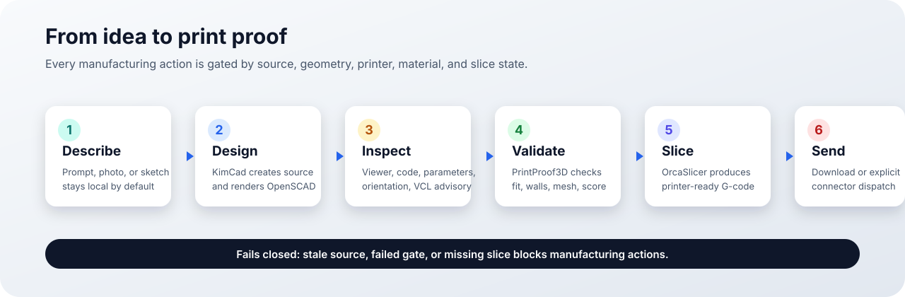
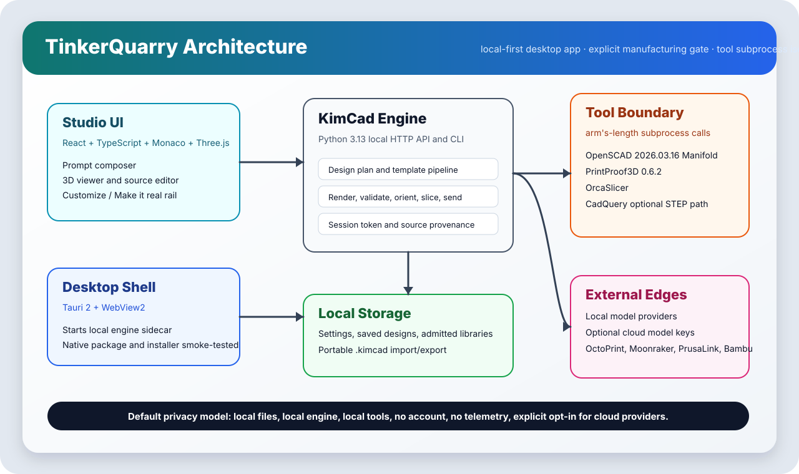

AI-assisted, source-visible CAD
The engine creates OpenSCAD source you can inspect, edit, save, export, and re-gate.
Describe a part in plain English, inspect the generated OpenSCAD, validate it against your printer, slice it, and download or send the proven output. No account. No telemetry. No cloud by default.
TinkerQuarry is built for functional 3D-printing work: clips, brackets, mounts, holders, trays, organizers, and the one-off parts that normally require a CAD detour.
The engine creates OpenSCAD source you can inspect, edit, save, export, and re-gate.
Ready-to-print means a current successful slice exists for the selected printer, material, and orientation.
Models, prompts, images, and designs stay on your machine unless you explicitly configure a cloud provider.

The Studio UI runs in a Tauri desktop shell and talks to the local KimCad engine. Geometry, validation, and slicing are handled by explicitly pinned local tools.

v1.3.0 passed the full local release gate on commit 0cf99a0.
GauntletGate ALL closed with no blocker, critical, major, minor, or nit findings remaining.
MSI and NSIS artifacts build; release executable and installed app smoke tests pass.
Playwright covers build, viewer, Make it real, slice, mock send, outcome, workspace controls, and mobile smoke.
Separate non-technical and technical sections for installation, operation, troubleshooting, CLI, API, and release proof.
The evidence-backed status of every beta surface, including what is real and what remains future work.
Ask questions, share prints, suggest roadmap items, and help shape the beta.